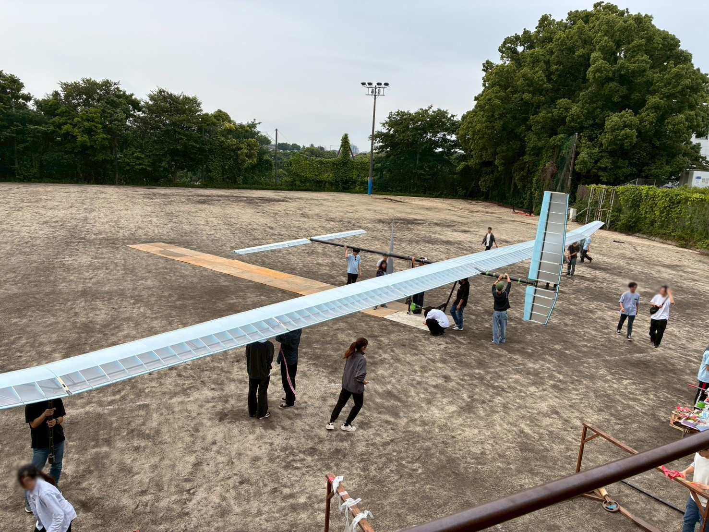
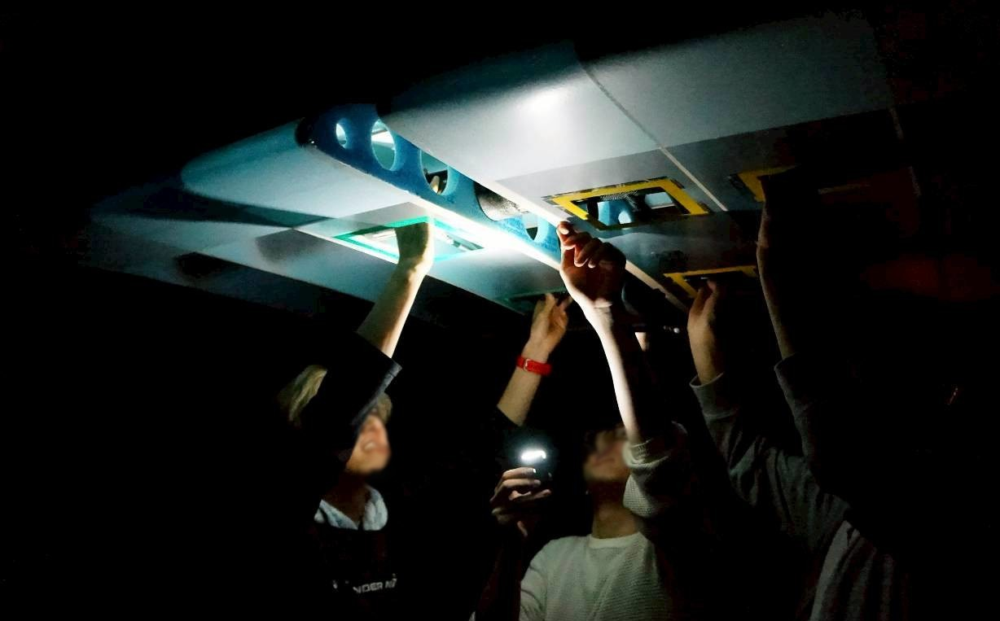
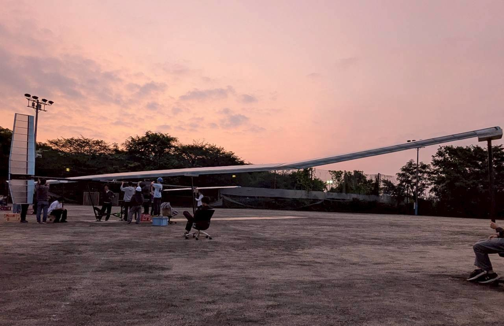
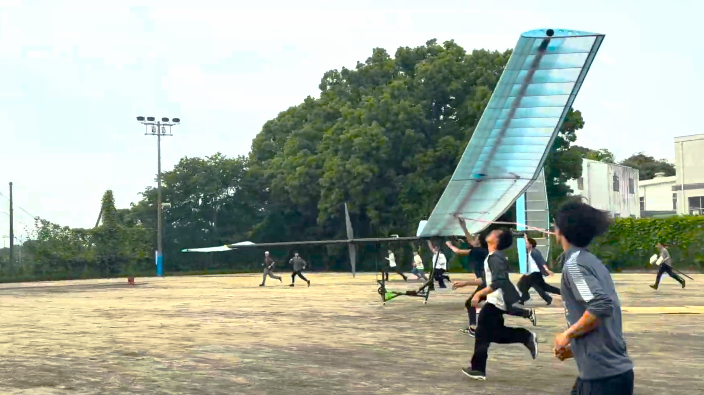
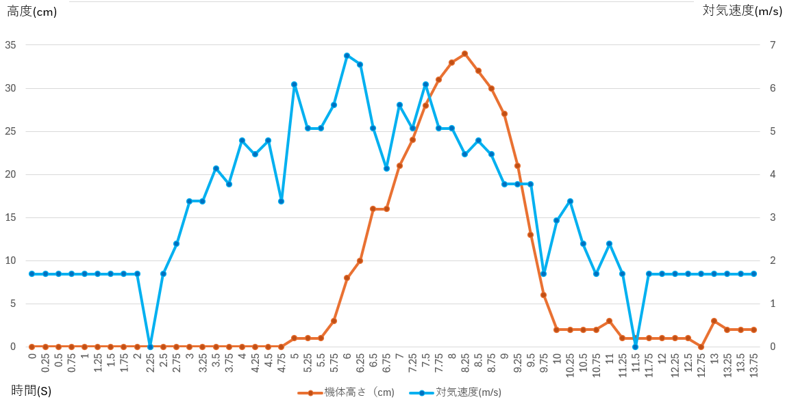

２６代 第１回GTFレポート
GTFとは
作成した機体が設計通りに飛行できるか確かめるため、グラウンドで機体を組み立て、短いフライトを行いました！写真はフライト直前の機体の様子です。どちらが前か分かりずらいですね笑 この機体はカナード機なので水平尾翼がある方（写真左上）が機体正面となっております。

GTFの内容
深夜２３時から機体の組み立てを開始しました。３回目の全組ということもあって順調に機体を完成させることができました！

日の出がめっちゃきれいでした！

日の出後、ついにテストフライトを行いました。グラウンドが小さくパイロットを載せた状態では飛行できないため、パイロットなしの状態での試験となりました。
初めてのジャンプ試験でしたが問題なく成功し、30cm程度の浮上が確認できました！ 機体が浮き上がった瞬間の感動は忘れられません。

結果

ジャンプ試験の結果は上のようになりました！機速4~5m/s辺りで浮上し、30cm程度のジャンプに成功していますね！パイロットなしでの設計上の機速度が4m/s強なので、おおよそ設計通りの結果になっていると考えられます。ピッチやロールも小さく重心位置も正しく調整されていました！
さいごに
今回のGTFは全体として非常に順調に進めることができました。今後は無人でのジャンプ試験による重心位置調整に重点を置いてテストフライト実施していく予定です。
ここまで読んでいただきありがとうございました！
横浜AEROSPACE 27代構造設計 山鹿